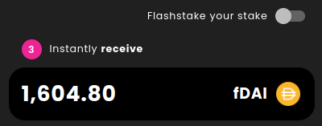
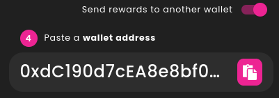

Advanced mode
Caution
This section is meant for advanced users and will not be necessary for most Flashstakers. Before going on to this section, we highly recommend having a good understanding of the Flash Protocol.
The advanced mode is a number of additional, more advanced functionalities for Flashstake. They are made accessible by switching on the Advanced mode toggle at the top of the page, and comprise the following:
- Selecting a strategy
- Flashstaking your stake
- Sending rewards to another wallet
- Minting stake as NFT upfront
Note
When switching on the Advanced mode, all the advanced functionalities are in their default option, the same as if the Advanced mode was switched off. This means that if you simply switch on the Advanced mode, it won’t change anything unless you change one or more advanced functionalities from their default state.
Strategy selection
Flashstake’s default strategy is DAI-AAVE. It is the one used by non-advanced users and selected by default when switching on the advanced mode. The advanced mode allows you to select any other strategy available on the app.

If you click the strategy dropdown, a modal opens where you can select any strategy from the list. You can use the help of the search bar to look up a specific strategy’s name or Ethereum address.
Flashstake your stake
This option is on by default, as the stakes done on the Flashstake app use the flashStake method from the Flash Protocol smart contract by default. If it is switched off, then instead of the FlashStake method, your stake will be directly created by the stake method. The difference is that the flashStake method calls the stake method, which creates fTokens, and goes on to immediately burn those fTokens for principal i.e. your upfront yield. If you only call the stake method, then the fTokens are not burnt but sent to your wallet. Therefore, you should use this option if you want to receive fTokens instead of the reward token, which you can then burn for principal or for yield.
As you will receive fToken upfront, the reward field changes to display how many fTokens you will receive for staking.
Send rewards to another wallet
If switched on, this functionality allows you to choose which Ethereum address shall receive your upfront yield - or your minted fTokens if you choose not to Flashstake your stake. By default, the address in the field is your own address. You can change it only by pasting another, valid Ethereum address, either with Ctrl+V, right-click + Paste or by click the paste button on the right side of the field.
Mint stake as NFT
Hint
If you did not switch on the Mint stake as NFT option of the Advanced mode before creating your stake, you can always mint your stake as an NFT anytime after it is created. To do so, use the Mint NFT button in the Stake Dashboard.
If you switch on Mint stake as NFT, an NFT of your stake shall be minted in the same transaction as the stake is created. This works no matter if Flashstake your stake is swtiched on or off, because the issueNFT method in the Flash Protocol smart contract is called inside the stake method, provided that the _issueNFT parameter is set to true.